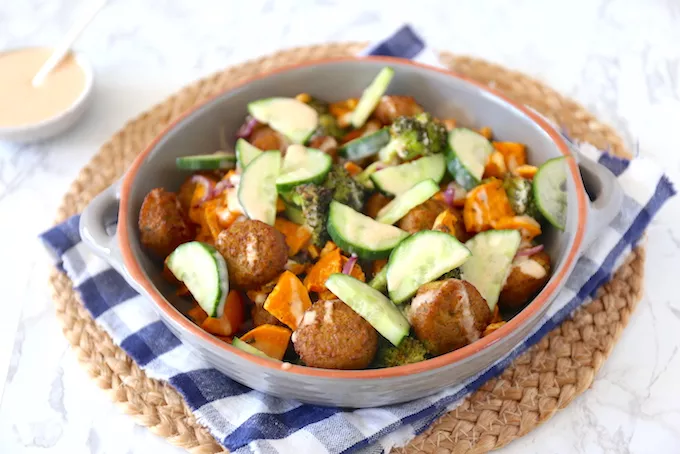

Zoete aardappelschotel met falafel

Ingredienten voor 4 personen
- 500 gram zoete aardappels
- 200 gram falafel
- 600 gram broccoli
- 2 uien
- 8 el olijfolie
\
- 3 tenen knoflook
- 2 tl tijm
- 2 tl basilicum
- zout en peper
-
Verwarm de oven voor op 200 graden. Schil de zoete aardappels
en snijd ze in kleine blokjes. Snijd de ui in halve ringen en
de broccoli in roosjes. Verdeel deze ingredienten over een
bakplaat met bakpapier
-
Meng de olijfolie, knoflook en kruiden in een bakje.
Giet dit mengsel over de groenten en meng alles door elkaar
-
Bak de traybake 15 minuten in de oven. Voeg de falafel toe en
bak het nog 8 minuten. Snijd ondertussen de komkommer in stukjes.
Tip: Lekker met tzatziki